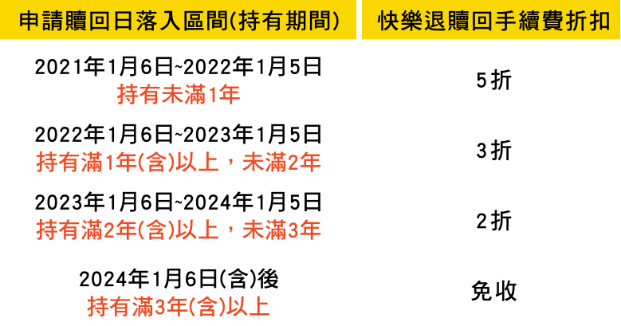
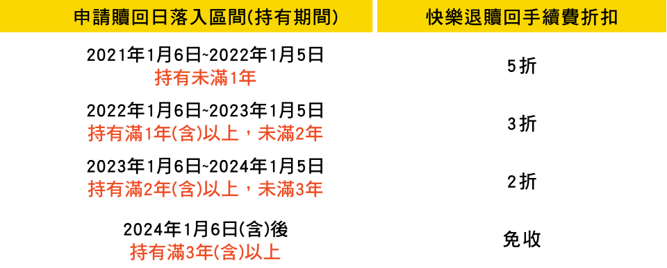

-
1我可以參加「快樂退全民計畫活動」嗎？
- 若您是未曾於遠東商銀定期定額扣款的客戶(含全新戶)，即可參加「快樂退全民計畫專案」。
-
2「快樂退全民計畫活動」有無參加定期定額筆數或活動優惠適用期間的限制？
- 每一位活動參加者於申請日開始起算6個月(日曆日進行計算，若滿6個月後之該月份，無相對應之日期，將順延至次一月份之1號)，享有不限申請定期定額筆數的限制！
- 舉例：2021年1月5日參加本活動並完成首筆定期定額申購申請，自申請當日起至2021年7月5日(含)止的6個月優惠適用期間內，將享有不限申請筆數的快樂退定期定額優惠。
-
3「快樂退全民計畫活動」申購手續費怎麼計算？
- 快樂退全民計畫活動為0%申購手續費率，於每一次定期定額扣款時，將無申購費用。
-
4在什麼情形下，我會被收取快樂退贖回手續費？
-
該筆定期定額憑證若符合下列情形之一，本行將依活動辦法，按『信託本金*贖回基金標的之牌告手續費率*快樂退贖回手續費折扣』收取快樂退贖回手續費：
自首次成功扣款日起，未持有滿3年以上即進行贖回交易；或
自最後一次扣款日之次月份起，連續12個月份無成功扣款紀錄，且未持有滿3年，即進行贖回交易。
以前述(2)舉例：該筆定期定額憑證首次成功扣款日為2021年1月6日，最後一次成功扣款日期為2021年2月26日，自次月(3月)1日起起至次年2月底前，皆無定期定額扣款成功紀錄，若於2024年1月5日(含)前申請贖回，皆依『信託本金*贖回基金標的之牌告手續費率*5折』，收取快樂退贖回手續費。
-
5若我申請「暫停扣款」或「終止扣款」，之後申請贖回時，將如何收取快樂退贖回手續費？
- 快樂退贖回手續費除將依下列原則進行計收，並於您的贖回款項中自動扣減：
費用計算公式為：贖回信託本金*贖回基金標的之牌告手續費率*快樂退贖回手續費折扣；
快樂退贖回手續費折扣：將依該筆定期定額申購號碼首次成功扣款日至贖回申請日，計算持有期間後及認定快樂退贖回手續費折扣。
- 舉例：該筆定期定額憑證2021年1月6日首次扣款成功，於2022年1月6日該日申請贖回，相對應快樂退贖回手續費折扣即為3折：
-
6已參加「快樂退全民計畫專案」的定期定額扣款憑證，可以申請變更(或異動)扣款的基金嗎？
- 可以，可於符合「快樂退全民計畫專案」的活動基金中，選擇您想要申請變更(或異動)的基金(依本行系統或各系列基金規範進行)。
-
7已參加「快樂退全民計畫專案」的定期定額扣款憑證，我可以申請「全部贖回」或「終止扣款」交易功能嗎？
- 可以，惟您送出申請後，本行將不再自動執行該筆定期定額憑證的扣款，另外於您贖回時該筆資金時，依「快樂退全民計畫專案」活動規則，收取相關費用(若有)。
-
8「快樂退全民計畫專案」除快樂退贖回手續費外，有收取其他費用嗎？
- 是的，將依本行規範收取相關費用，如：信託保管費、轉換手續費等，相關費用請洽詢各分行人員。